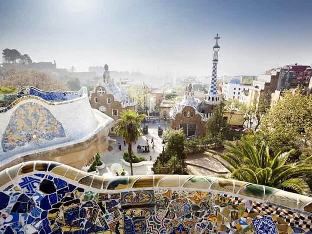

به نام خداوند جان و خرد ***** کزین برتر اندیشه بر نگذرد

***صفحه اصلی***
***گردشگری***
***آیا می دانید***
***ورزش***
ده شهر برتر دنیا از نظر گردشگری
01. ونیز - ایتالیا
این شهر یک قانون طلایی دارد: اگر در ونیز گم نشدید، کارتان را درست انجام ندادهاید!
حتی گردشگرانی که حس جهتیابی قوی دارند، حریف خیابانهای پرپیچوخم ونیز نمیشوند .
برای اینکه بیشترین لذت را از گشتوگذار در این شهر ببرید، باید کمی گیجی و سرگشتگی چاشنی گردشتان کنید .
02. استانبول - ترکیه
تلاقی تاریخی فرهنگ و معماری در استانبول ، نمایی چشمگیر از دو امپراتوری خلق کرده است.
کافی است به تماشای ایاصوفیه بروید تا هم معماری بیزانس را در کاشیهای رنگارنگ گنبد و هم طراحی اسلامی را در منارههای عثمانی ببینید .
03. لندن - انگلستان
لتدن یکی از پرهیاهوترین شهرهای دنیاست که هم آثار تاریخی (کلیسای وستمینیستر) و هم بناهای مدرن (چشم لندن) را در دو سوی رودخانهی تایمز در خود جا داده است.
شهر سرشار از هنر و ادبیات است؛ گویی دیوارهای شهر گنجایش این همه شگفتی را ندارد!
در چند سال گذشته انواع گالریها و فروشگاههای آثار هنری جلوهی بیشتری به بخشها خلوتتر و بیهیاهوی شهر دادهاند .
04. پاریس - فرانسه
شاید موافق نباشید، اما خیلیها باور دارند شهری پراحساستر از پاریس وجود ندارد.
پاریس شهری است که شور و احساس و تاریخ در آن به هم گره خوردهاند :
کافههایی که در خیابانهای سنگفرش صف کشیدهاند، مردمی که در هر ساعت از روز در اطراف رود سن قدم میزنند
و محلههایی که هر کدام نشان ویژهی خودشان را دارند، از نتردام تا کلیسای سکرهکُر و برج ایفل .
05. آمستردام - هلند
در سال ۲۰۱۰ ثبت کانال آبی شهر آمستردام بهعنوان میراث جهانی، تمرکز آدمهای بیشماری را از محلههای خاص و رستورانهای غذاهای دودی به یکی از باشکوهترین آثار فرهنگی اروپا هدایت کرد.
آسیابهای بادی، دوچرخهسواری، پنیر، ساختمانها کمطبقه و ونگوگ را به جذابیتهای آمستردام اضافه کنید .
06. سنت پترزبورگ - روسیه
داستایفسکی این شهر محبوب داستانهایش را «هدفمندترین و انتزاعیترین شهر دنیا» نامیده است.
این شهر در دورهای پرتبوتاب و در مدت کوتاهی بر مبنای اهداف و آمال شخصی بهنام «پیتر کبیر» شکل گرفت.
دومین شهر بزرگ روسیه که پر از آثار هنری و حتی خودش یک نمونهی هنری است خیلیوقتها با فلورانس ایتالیا مقایسه میشود .
07. بیروت - لبنان
حتی در گیرودار جنگ و نابودی، بیروت زیبا، فریبنده و مستحکم است.
پایتخت لبنان دارای هنر، معماری، غذا و هتلهای شگفتانگیزی و بهباور برخی یکی از بهترین شهرهای دنیا است .
08. بارسلون - اسپانیا
آنتونی گائودی ” معمار کاتالان قرن نوزدهم، میخواست با الهام از فنون معماری گوتیک و معماری شرقی، در شهری که عاشقش بود فضایی سازمانیافته و متمدن خلق کند.
با گشتی در بارسلون با انبوهی از آثار و دستاوردهای او روبهرو میشوید، ازجمله کاشیهای سرامیکی که امضای او را دارند،
طرحها و ساختمانهای شیشهرنگی، نقشها و کندهکاریهای روی سنگ و آهن در پارک گوئل و اوج هنر و خلاقیت او “ساگرادا فامیلیا ” (بهمعنی خانوادهی مقدس) شاهکاری که ناتمام مانده است .
09. سیدنی - استرالیا
از زیبایی سیدنی هرچه بگوییم، تمام نمیشود!
بزرگترین شهر استرالیا با فرهنگ زندگی دریایی، قایقهای محلی برای رفتوآمد یا بازی در سواحل زیبای شهر ازجمله باندی، مانلی و ردلیف، اپراهاوس پرشور سیدنی دلایلی کافی برای دیدن شهر هستند.
تماشای منظرهی شگفتانگیز شهر را از بلندای جایگاه شیشهای برج سیدنی ازدست ندهید .
10. ریودوژانیرو - برزیل
مسیح رهاییبخش در بلندیها مراقب شهر شگفتانگیز است؛ درحالیکه این شهر پرهیاهو و تپنده، رقصان و خرامان به سمت دریا میرود .
ریودوژانیرو، یکی از زیبا ترین شهر هایی است که هم دارای جنگل، کوه و ساحل است.